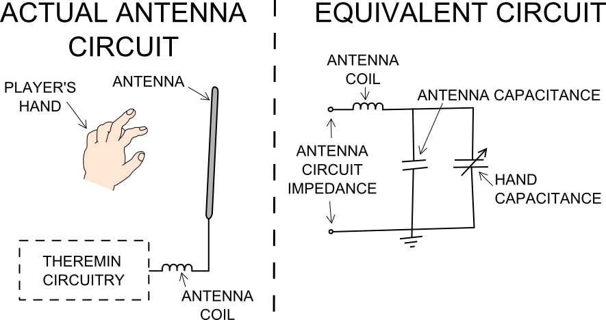

... the pitch antenna is responsible for varying the pitch or frequency of the sound produced by the device. It is operated by placing the hand near the antenna thus changing the total capacitance seen by the pitch antenna circuit. The antenna capacitance equation1 is used to illustrate this:
Equation 1: $C_A(\infty )=\frac{2\pi\epsilon_0h}{log(\frac{2h}{d})-k}$
where $C_A$ is the antenna's capacitance, $h$ and $d$ are height and diameter of the antenna respectively, $\epsilon_0$ is the permittivity of free space (8.85 x 10-12 Fm-1), and $k$ is a constant depending on how far above the ground the antenna is mounted, which is about 0.4 for an antenna mounted almost at ground level1. The permittivity of free space, $\epsilon_0$, gives a hint that the capacitance of the antennas will be affected by characteristics like humidity.
Equation 1 is the antenna's capacitance seen when the players hand is far away from the antenna; this equation also applies for the volume antenna. Using Equation 1 and an antenna with $h$ = 0.45m (18 in) and $d$ = 0.0095 m (3/8 in) and $k$ being 0.4 we get $C_A$ to be approximately 15.87 pF. The change in antenna capacitance when the players hand is in proximity is given by the following equation:
Equation 2: $\Delta C_A\approx\frac{\pi\epsilon_0h}{10log(\frac{4x}{d})}$
Where $x$ is the players hand distance from the antenna (it is assumed that this distance is greater than $d$)1. So, according to Equation 2, if a players hand is 4 m away from the antenna, a change in capacitance of only 0.43 pF is introduced to the antenna circuitry. As the player puts his hands close to the pitch antenna, the pitch frequency increases and as the player puts his hand away from the antenna, the pitch frequency decreases. The pitch antenna will be vertically placed on the right hand side of the uWave Theremin as this configuration is more sensitive to the players hand far away from it, and less sensitive when the players hand is close by2.
[1]: Physics of the Theremin Skeldon, K., Reid, L., McInally, V., Dougan, B., Fulton, C., Am. J. Phys. Vol. 66, No. 11, November 1998.
...excerpt from final paper, see documents.